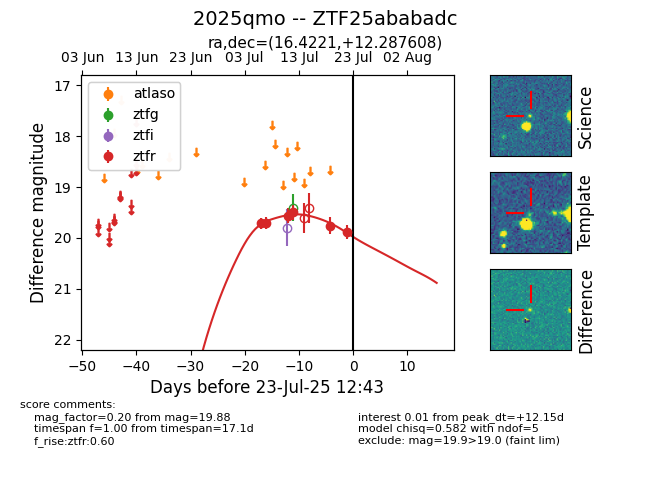

Target ZTF25ababadc at 2025-07-23 12:43, see:
FINK: fink-portal.org/ZTF25ababadc
Lasair: lasair-ztf.lsst.ac.uk/objects/ZTF25ababadc
ALeRCE: alerce.online/object/ZTF25ababadc
TNS: wis-tns.org/object/2025qmo
YSE: ziggy.ucolick.org/yse/transient_detail/2025qmo
alt names
ZTF25ababadc (ztf,fink)
2025qmo (tns,yse)
coordinates:
equatorial (ra, dec) = (16.4221,+12.28761)
galactic (l, b) = (128.4015,-50.43274)
photometry
last ztfr=19.88
6 ztfr detections
